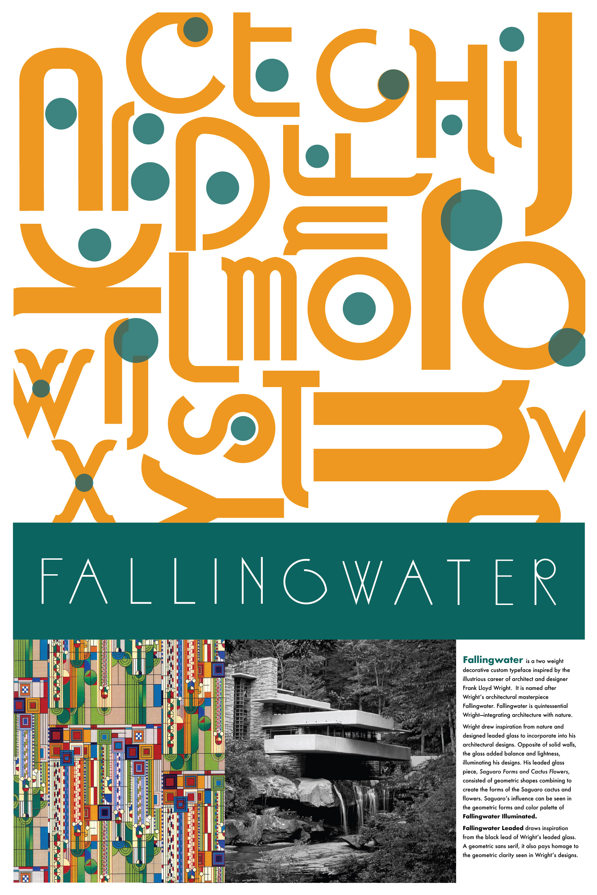
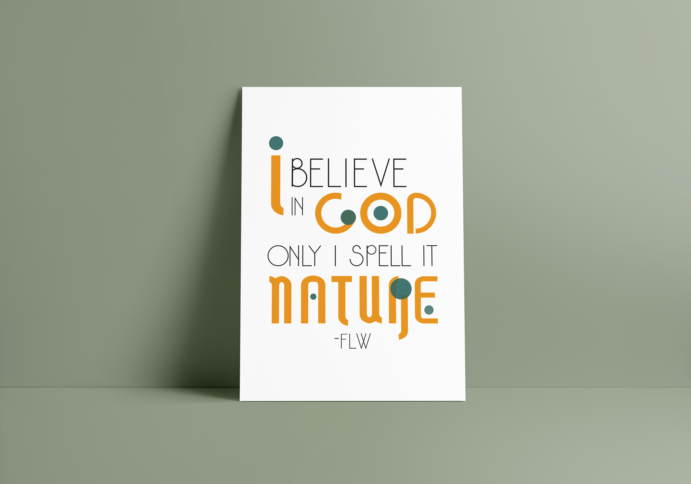

<!DOCTYPE html>
<html>

  <head>
    <meta charset="utf-8">
    <title>Fallingwater Custom Typeface</title>
    <link href="styles/stylesheet.css" rel="sytlesheet">
    <link href="https://fonts.googleapis.com/css?family=Oswald|Quattrocento"
    rel="stylesheet">
  </head>

  <body>
    <p><strong>Fallingwater</strong> is a two weight decorative custom typeface inspired by the
      illustrious career of architect and designer Frank Lloyd Wright.  It is
      named after Wright’s architectural masterpiece Fallingwater.</p>

    <p>Fallingwater is quintessential Wright—integrating architecture with nature.
      Wright drew inspiration from nature and designed leaded glass to incorporate
      into his architectural designs. Opposite of solid walls, the glass added
      balance and lightness, illuminating his designs. His leaded glass piece,
      <em>Saguaro Forms and Cactus Flowers</em>, consisted of geometric shapes combining
      to create the forms of the Saguaro cactus and flowers.</p>

      <p>Saguaro’s influence can be seen in the geometric forms and color palette
      of Fallingwater Illuminated. Fallingwater Leaded draws inspiration from the
      black lead of Wright’s leaded glass. A geometric sans serif, it also pays
      homage to the geometric clarity seen in Wright’s designs.</p>

    

    

    

    

  </body>

  <footer>
    <p>©Copyright 2019. All rights reserved.</p>
  </footer>
